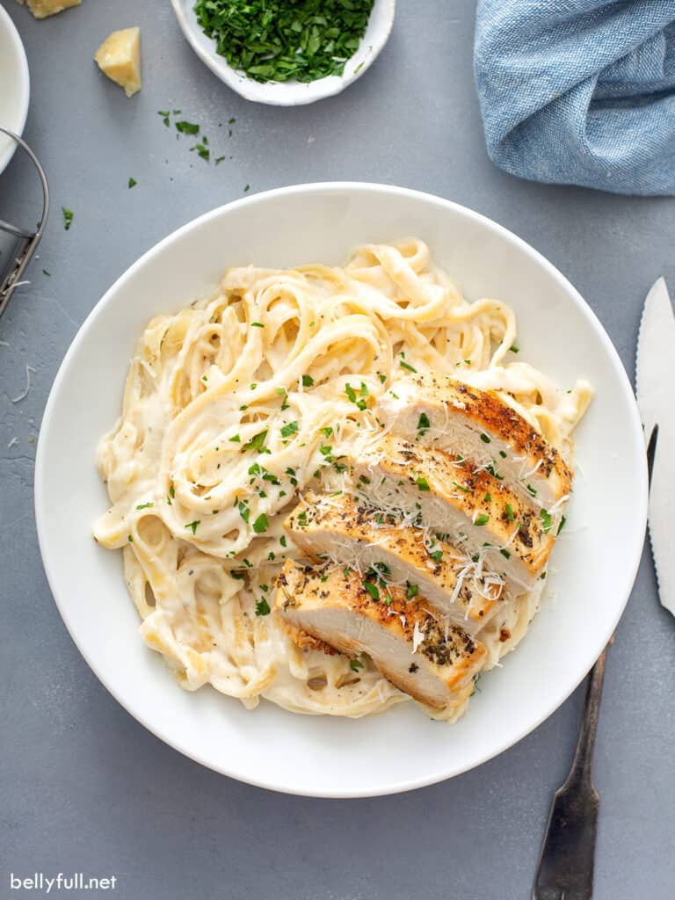

Chicken Alfredo

Description
Chicken Alfredo warms the stomach adn the soul. Try out one of my favorite recipes today!
Check out the original recipe here.
Ingredients
- For the chicken:
- 1 lb boneless, skinless chicken breast
- 1 tsp Italian seasoning
- 3/4 tsp Kosher salt
- 1/4 tsp pepper
- 2 tbsp extra-virgin olive oil
- 1 tbsp butter
- For the sauce:
- 1/2 c. butter, cut into large cubes
- 2 c. heavy whipping cream
- 1 clove garlic, minced
- 3/4 tsp garlic powder
- 3/4 tsp Italian seasoning
- 1/4 tsp salt
- 1/4 tsp pepper
- 2 cups freshly grated Parmesan cheese
Steps
- Make the noodles. Bring a large pot of salted water to boil. Add the fettuccine and cook until al dente, usually 10 minutes. Reserve 1/2 cup of the cooking water, then drain noodles well. Set aside.
- Season chicken breasts with Italian seasoning, salt, and pepper.
- Warm olive oil over medium-high heat in large skillet. Once simmering, add the chicken and leave for 5-7 minutes until bottom is golden-brown. Flip over, add in 1 tbsp of butter, and continue cooking for another 5-7 minutes.
- Transfer chicken to cutting board and let sit 3 minutes. Cut into 1/2 inch slices and tent with foil while you prepare the sauce.
- In the same pan on medium-high heat, add butter and cream, whisk until butter is melted.
- Add in minced garlic, garlic powder, Italian seasoning, salt and pepper. Whisk until combined.
- Bring to a gentle simmer and cook for 3-4 minutes until it begins to thicken.
- Stir in parmesan cheese just until melted and sauce is smooth.
- Take sauce off the heat and immediately toss with noodles, topping with sliced chicken.